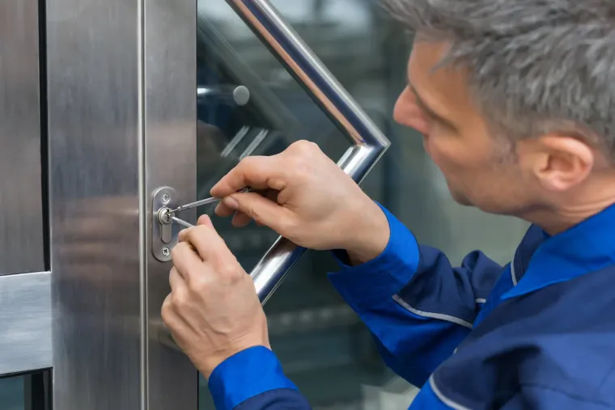
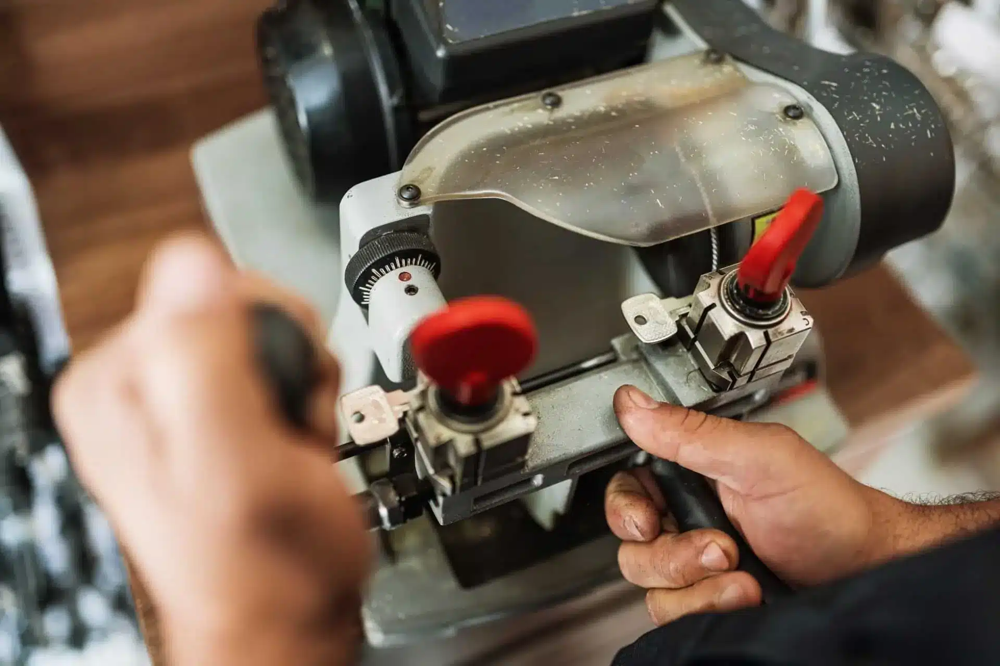
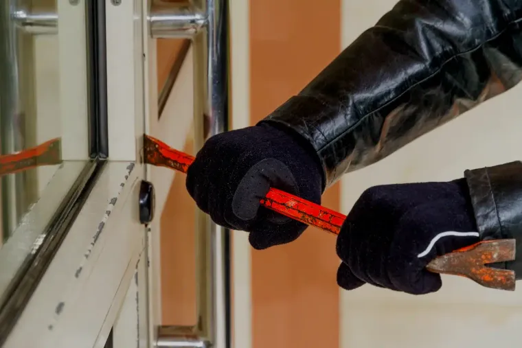

Zugefallen, abgeschlossen oder Schlüssel von innen steckend: Für uns sind das drei verschiedene Aufgaben mit drei verschiedenen Werkzeugen. Auf der Leistungsseite steht, was der Unterschied für Dauer und Preis bedeutet – und warum wir am Telefon nachfragen, wie die Tür genau zu ist.

Ein Schloss tauscht niemand zum Vergnügen: Dahinter steckt ein verlorener Schlüssel, ein Einzug oder eine Tür, die sich nur noch mit Nachdruck abschließen lässt. Gängige Zylinder haben unsere Monteure im Fahrzeug dabei, deshalb bleibt es meist bei einem Termin.

Nicht jeder Schlüssel darf einfach nachgeschnitten werden. Bei Sicherungskarte oder Sperrvermerk gelten eigene Regeln, und die entscheiden über Weg und Wartezeit. Schicken Sie uns per WhatsApp ein Foto Ihres Schlüssels, dann sagen wir Ihnen vorab, was in Ihrem Fall gilt.
Ein Fahrzeugschlüssel ist Elektronik, nicht nur gefrästes Metall: Ohne angelernten Transponder springt der Motor nicht an. Wir fertigen Ersatzschlüssel an, programmieren sie am Fahrzeug und reparieren ausgeleierte Gehäuse und tote Funkfernbedienungen.

Sobald viele Menschen viele Türen benutzen, wird jeder einzelne Schlüssel zur Verwaltungsaufgabe. Wir erstellen den Schließplan, montieren die Anlage und dokumentieren sie – damit auch Jahre später noch klar ist, welcher Schlüssel welche Tür öffnet und wer ihn hat.

Zylinder, Schutzbeschlag, Zusatzschloss, Panzerriegel, Fenstersicherung: Welches Bauteil an Ihre Tür gehört, entscheidet der Aufbau des Rahmens und nicht der Katalog. Verbaut wird unter anderem Technik von ABUS und KESO.

Der teuerste Schließzylinder nützt wenig, wenn das Kellerfenster daneben mit dem Schraubendreher aufgeht. Deshalb steht bei uns die Suche nach der Schwachstelle am Anfang und die Empfehlung erst danach. Auch nach einem Einbruch sichern wir die Tür zuerst wieder ab.